Created Tuesday 23 June 2020
We now begin our journey into differentiation. The big challenge here is that we have multiple variables.
Back in Calculus 1, we learned that the derivative was the rate of change of the function relative to the variable.
Expect things to get not necessarily hard but definitely a bit more complex then what we're used to.
Lets Begin
Suppose that . Remember, read this as, "U is an open set of the space Rn". Also, let:
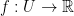
With this in mind, we can move onto our first big topic!
Partial Derivative
What is a partial derivative?
The functions denoted as:
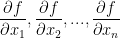
are called the partial derivatives of f relatively to the variable x1, ..., xn.
In case it wasn't clear, the symbol is for partial derivatives. Sorta reminds me of 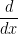 from back in calc1!
An important quality of a partial derivative is that we take the derivative only in regards to a single variable. All other variables are considered fixed!
So then, say we have the following function:
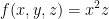
Let's take a partial derivative of f relative to x like so:
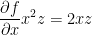
In the case of the above equation, z is considered fixed. So we don't do anything to it. On the other hand, we are finding the derivative of x. If you managed to retain anything from your calculus I and II courses, you'll immediately see that 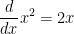.
Now then, we get this Pascal derivative in general:
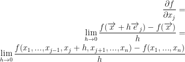
Remember, e1, e2, ..., en represent the canonical basis of  .
.
Also, all of xi is fixed except for the xj variable.
Continuing on, the equation above shows the rate of change of f relative to xj.
Once again, 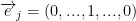 where the 1 is in the j position.
Finally: Everything we just went over is the definition of the partial derivative.
Examples
Example 1
Let 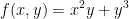
Remember, we essentially have a function that says
Now then, let's take those partial derivatives! You'll find that it's quite similar to what we've done back in calc1.
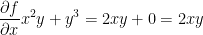
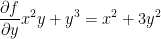
I hope the solutions are rather self explanatory.
Example 2
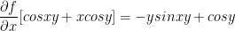
Remember, cos(xy) uses the chain rule from back in calc1! As such, the derivative of xy in respect to x is just y.
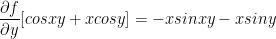
Second Derivative
Back in calc1, the second derivative was rather simple. You just find the derivative again. So, x2 would become 2x and 2x would become 2. Simple!
Sadly, it's not as simple in multivariable calculus. We need to take into consideration the various combinations that come with multiple variables.
So, for we have the following second derivatives:
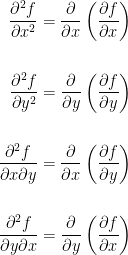
And of course, if we enter the third dimension we get even more combinations!
Theorem
Now for a theorem without proof as we'll just need the theorem itself. The proof is very technical and doesn't give a lot of insight he says.
1) Definition: We say that a function  is a C1 - function iff f has all partial derivatives relatively to x1, ..., xn and all are continuous.
is a C1 - function iff f has all partial derivatives relatively to x1, ..., xn and all are continuous.
As an extension of that definition, f is a C2 - function if all second order partial derivatives exist and are continuous.
Also, f is a Ck - function if all k ordered partial derivatives exist and are continuous.
Lastly, f is a - function if all partial derivatives exist of any order and are continuous.
Now for the actual theorem:
Suppose that  and f is a C2 - function, then:
and f is a C2 - function, then:
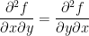
Now then, let us verify the above theorem for the function 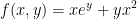
To begin, let us take the partial derivative for x and y by themselves like so:
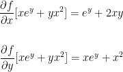
We can now build off of this for our second derivatives!
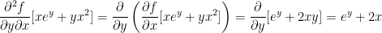
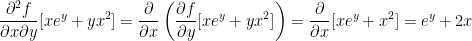
Very interesting! Remember how we said the following was true?
Well, both second derivatives we just solved for are ey + 2x. As such, they are equal!
Warning! This only stands if the partial derivatives of both are continuous.
A General Vector Function
Let 
As such, we have the following:
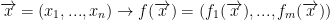
Definition: The Jacobian matrix of f is a mxn matrix where m is rows and n is columns. We write it as follows:
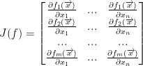
Special Case
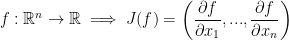
This is essentially a 1xn or just a vector.
We now have the following definition:
In this case, we can see J(f), which you should read as, "the Jacobian of f," is a vector and this vector we will denote by:
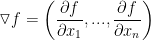
and we will call it the gradient of f.
{kind=link}
{kind=link}
{kind=link}
{kind=link}
{kind=link}
{kind=link}
{kind=link}
{kind=link}
{kind=link}
{kind=link}
{kind=link}
{kind=link}
{kind=link}
{kind=link}
{kind=link}
{kind=link}
{kind=link}
{kind=link}
{kind=link}
{kind=link}
{kind=link}
{kind=link}
{kind=link}
{kind=link}
{kind=link}
{kind=link}
{kind=link}
{kind=link}
{kind=link}